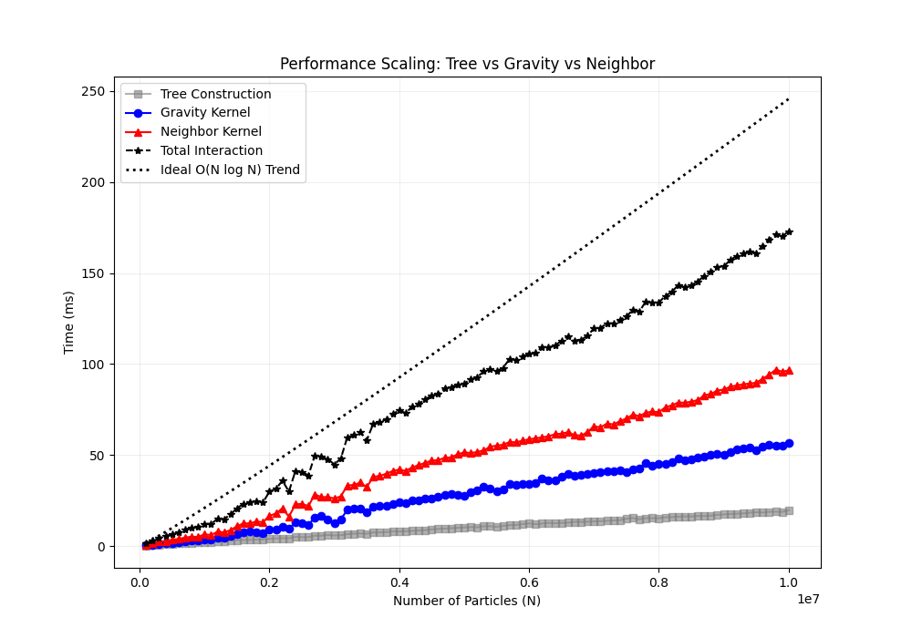
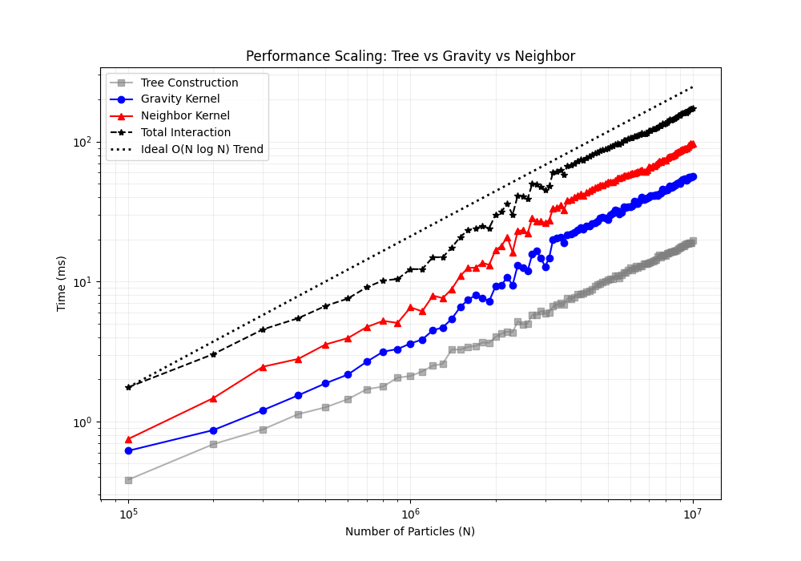
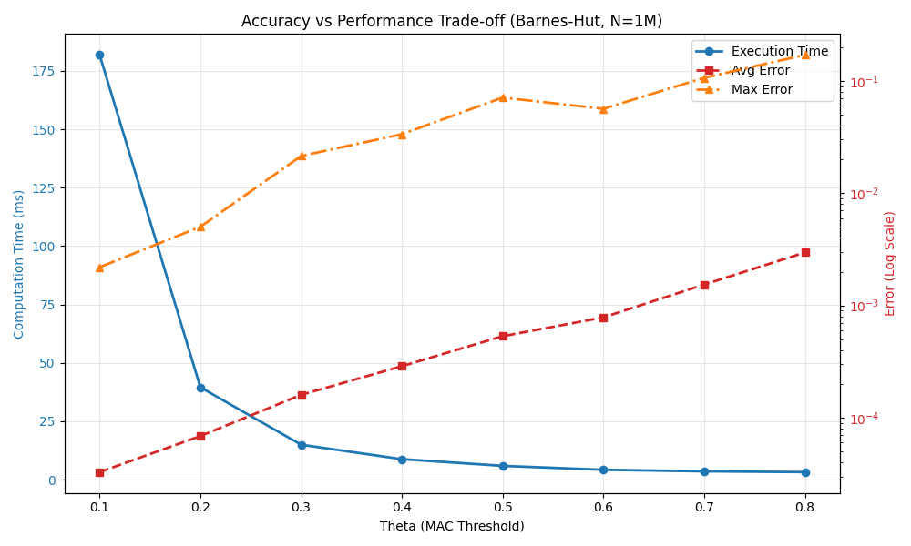

---
为什么需要考虑引力？
在天体物理的 SPH 模拟中，除了撞击过程本身，星体自身的引力对最终结果的影响同样至关重要。这也解释了为什么在模拟固态行星的撞击时，我们往往不引入物质强度模型，而是将其近似为纯粹的流体来处理。对于某些巨型撞击模拟而言，引力的作用不仅体现在模拟过程中需要实时计算引力，甚至在预处理阶段就必须求解泊松方程，以构建一个处于引力平衡状态的初始天体，再将其投入撞击计算。
这里所说的引力，即自引力，指的是 SPH 粒子之间由于质量分布而产生的相互吸引力。这与模拟水动力学现象（如溃坝）时所采用的引力模型截然不同——后者仅需为每个粒子统一施加一个指向地面的恒定加速度即可。
如何计算自引力，为什么需要树代码？
在 SPH 模拟中，自引力的计算本质上是对每一个粒子求解其所受的引力合力。根据万有引力定律，任意两个粒子之间都存在引力作用，这意味着对于包含 $N$ 个粒子的系统，直接计算所有粒子对的相互作用需要 $O(N^2)$ 次运算。当天体物理模拟的粒子数量达到百万甚至千万级别时，这种直接求和的方式在计算量上将变得完全不可接受。
这正是引入 Tree Code（树代码） 的核心动机。树代码的核心思想源于一个朴素的物理直觉：当一个远方的粒子团簇距离我们足够远时，我们无需逐一计算团簇内每个粒子的贡献，而是可以将整个团簇近似视为一个位于其质心的等效质点。通过这种近似，计算复杂度可以从 $O(N^2)$ 大幅降低至 $O(N\log N)$。
Tree Code（树代码）最初由 Barnes 和 Hut 提出[1]，因此基于该文献实现的树结构通常被称为 Barnes-Hut Tree。GASPHiA 在面向 CUDA 架构实现这一数据结构时，借鉴了文献[2]中的并行实现方案。
然而，文献[2]的方法直接服务于纯粹的 N 体模拟，其数据结构仅需满足自引力计算的需求；而 SPH 方法除了计算自引力外，还需依赖树结构进行高效的邻近粒子搜索。这一根本性的需求差异，导致 GASPHiA 最终的树代码结构与文献[2]存在显著不同。具体差异主要体现在两个方面：一是树节点中子节点（Child）数量的管理策略；二是在并行遍历树结构时的线程束投票机制——文献[2]仅需判定引力相互作用的条件，而 GASPHiA 作为SPH代码，必须额外融合邻近搜索的判定逻辑。
尽管在实现细节上存在上述分歧，二者在核心的空间递归划分思路上仍保持高度一致。因此，读者仍可将文献[2]作为理解底层空间划分逻辑的重要参考。
效率对比与优化
背景
目前 GASPHiA 虽然已经实现了基于 Barnes-Hut Tree 的自引力计算。但是与文献[2]相比，在遍历树的时候，由于没有对粒子进行空间排序，因此效率肯定没有经过空间排序的效率高。为了直观展示 Barnes-Hut Tree 的威力，我们实现了暴力双循环计算自引力作为一个参考，同时以不使用空间排序的效率作为基准，探讨最终包含排序过程后的自引力计算的效率提升。
计算核函数
基于树的自引力计算核包含以下几个：
- 重置树结构
void SPHOctree::resetOctree()
{
resetOctreeKernel<<<numBlocks, ThreadsPerBlock>>>(
this->d_child,
this->d_count,
this->d_start,
this->d_sorted,
this->d_node_com_mass,
this->d_node_hmax,
this->d_mutex,
this->d_node_index,
this->num_particles,
this->max_nodes);
CUDA_CHECK(cudaGetLastError());
}
- 计算粒子边界
void SPHOctree::computeBoundingBox(RealType4 *d_particles)
{
computeMin(d_particles, d_reduceTmp, num_particles, d_bounding_box_min);
computeMax(d_particles, d_reduceTmp, num_particles, d_bounding_box_max);
CUDA_CHECK(cudaDeviceSynchronize());
CUDA_CHECK(cudaGetLastError());
}
- 自顶向下建立树
void SPHOctree::buildTree(RealType4 *d_positions)
{
buildTreeKernel<<<numBlocks, ThreadsPerBlock>>>(
d_positions,
this->d_node_com_mass,
this->d_count,
this->d_start,
this->d_child,
this->d_node_index,
this->d_bounding_box_min,
this->d_bounding_box_max,
this->num_particles,
this->max_nodes
);
CUDA_CHECK(cudaGetLastError());
CUDA_CHECK(cudaDeviceSynchronize());
}
- 计算节点质心
void SPHOctree::computeCenterOfMass()
{
computeCenterOfMassKernel<<<numBlocks, ThreadsPerBlock>>>(
this->d_node_com_mass,
this->d_node_index,
this->num_particles);
CUDA_CHECK(cudaGetLastError());
CUDA_CHECK(cudaDeviceSynchronize());
}
- 计算自引力
computeGravityKernel<<<numBlocks, ThreadsPerBlock>>>(
d_positions,
this->d_node_com_mass,
this->d_child,
d_accelerations,
this->d_bounding_box_min,
this->d_bounding_box_max,
this->num_particles,
this->theta * this->theta,
this->constG);
性能瓶颈分析
根据文献[2]的实现，整个树代码流程中最耗时的部分在于最后一步——遍历树结构以计算自引力。其根本原因在于线程访问模式与数据空间分布的错配：若未对粒子数据进行显式排序，处于同一 Warp 中的粒子在物理空间上可能相距甚远。这种空间分布的离散性会直接导致 Warp 内部的线程在执行剪枝判定时产生严重分歧：
bool mac_satisfied = (child < n) || (!is_active) || (w_sq / theta_sq < r_sq);
if (__all_sync(0xffffffff, mac_satisfied))
{
// 剪枝
}
当同一 Warp 内的不同粒子面对各自不同的目标节点时，部分线程可能满足剪枝条件（mac_satisfied 为 true），而其余线程则仍需继续深入遍历（false）。由于 CUDA 的 Warp 执行遵循单指令多线程模型，所有线程必须同步执行同一指令路径。因此，只要 Warp 中存在任意一个线程不满足剪枝条件——即便多数线程本可以提前终止——整个 Warp 都必须进入后续的节点下钻流程。这种由线程间数据依赖差异导致的执行路径分叉，大幅削弱了剪枝机制的有效性，使得大量计算资源被耗费在不必要的深层节点访问上。
性能测试与对比
为验证上述分析，我先做了一个测试：通过离散一个正方体获得规则排列的粒子，采用单精度计算，离散得到 100 万个粒子进行测试。测试结果显示，遍历树计算引力确实是最耗时的步骤：
# 打乱后（无排序）
Calculating Gravity on GPU (Barnes-Hut, theta=0.5)...
--- Gravity Computation Profiling ---
resetOctree: 11.6206 ms
computeBoundingBox: 0.4268 ms
buildTree: 45.4690 ms
computeCoM: 0.1025 ms
computeGravity: 2955.5117 ms
-------------------------------------
# 规则排列（相当于粗略排序）
--- Gravity Computation Profiling ---
resetOctree: 10.7203 ms
computeBoundingBox: 0.4361 ms
buildTree: 44.1606 ms
computeCoM: 0.1303 ms
computeGravity: 202.4100 ms
-------------------------------------
关键发现：时间差距达到 15 倍，区别仅仅在于是否把粒子打乱。如果不打乱，就相当于我们做了排序（因为初始的粒子排布就是规则的）；如果打乱，时间激增。
详细的 Profile 数据如下：
| 指标名称 | 指标含义 | 规则排布 | 打乱排布 |
|---|---|---|---|
| Elapsed Cycles | Kernel 执行消耗的总 GPU 时钟周期数 | ~0.29 Billion | ~2.58 Billion |
| Duration | Kernel 实际运行时间 | ~0.19 秒 | ~3.10 秒 |
| SM Frequency | 流式多处理器平均运行频率 | ~1.55 GHz | ~830 MHz |
| Compute (SM) Throughput | 计算单元繁忙程度 | ~80.4% | ~79.2% |
| Memory Throughput | 内存子系统整体繁忙程度 | ~61.5% | ~59.0% |
| <span style="color: red;">L2 Cache Throughput</span> | <span style="color: red;">L2 缓存访问吞吐率</span> | <span style="color: red;">~23.9%</span> | <span style="color: red;">~14.1%</span> |
| <span style="color: red;">DRAM Throughput</span> | <span style="color: red;">显存直接访问吞吐率</span> | <span style="color: red;">~0.35%</span> | <span style="color: red;">~15.7%</span> |
| Achieved Occupancy | 实际活跃 Warp 占比 | ~98.6% | ~95.2% |
从表中可以清晰看出，打乱后 L2 Cache Throughput 从 23.9% 降至 14.1%，而 DRAM Throughput 从 0.35% 增至 15.7%。这表明粒子排序对于提升数据局部性、充分利用 L2 缓存、减少显存直接访问至关重要，直接导致了 15 倍的性能差距。
排序算法
上一小节通过对输入粒子进行 shuffle 发现：在 CUDA 上实现树算法时，粒子的空间局部性（Spatial Locality）起着决定性作用。局部性越好，同一个 Warp 内的 32 个线程在遍历八叉树时，就越容易访问相同的树节点，从而大幅减少 Warp 发散（Warp Divergence），并将 L1/L2 缓存的命中率推向极限，避免对极慢的 DRAM 产生大量直接读写。 > 注意：这里我虽然用了“减少 Warp 发散（Warp Divergence）”的表达，但其实线程并没有发散，只是打开了过多的节点，某种意义上，相当于warp投票mac_satisfied的不一致性较强，所以我还是借用了 Warp 发散的说法。
然而，在实际的 SPH 或 N-body 模拟中，随着时间的推移，粒子在空间中剧烈碰撞、混合，其在显存数组中的物理索引会与它们真实的几何位置彻底脱节。因此，我们需要在每一帧建树完成后，进行一次高效的空间排序（Spatial Sorting）。
1. 核心思想：利用树拓扑天然排序
既然八叉树本身就是对三维空间的完美网格化划分，那么按照遍历树的顺序（例如深度优先 DFS 或广度优先 BFS）依次读取叶子节点，得到的就是在三维空间中聚拢的粒子序列。
2. Gather 寻址策略：只排索引，不搬数据
在拥有数百万粒子的系统中，如果每次都在全局显存中来回拷贝几十 MB 的粒子坐标（float4 数据），不仅极其耗时，还会额外占用大量显存。采用 Gather 寻址策略:
- 不移动粒子数据在显存中的排布位置
- 生成一个一维的映射数组
sort sort[i]存放的是"第 i 个线程应该去处理的真实粒子编号"
在后续的引力计算中，同一个 Warp 内的相邻线程将读取 sort 数组中相邻的值，这样同一个warp处理的粒子在空间上都相近了，他们遍历树的路径也大概率会一致。
3. 自顶向下排序
为了在 GPU 上极速完成排序，我们利用建树阶段已经统计好的 count（子树粒子数），采用自顶向下的并行分配机制。父节点会根据各个子节点的 count，为它们在 sort 数组中划分好专属的"内存区间"。
4. Profile 验证
理论上，经过树排序后遍历，路径分化会进一步降低，因为同一个 Warp 的粒子的父节点几乎都在一起。为了量化这种提升，我将粒子数降到 100 万，对以下三种计算模式进行 Profile 分析：
| 计算模式 | 描述 |
|---|---|
| 1. 完全随机 | 不使用树排序，粒子顺序在空间上随机分布 |
| 2. 初始规则 | 不使用树排序，粒子顺序在空间上规则排列 |
| 3. 树排序 | 树排序，粒子顺序在空间上随机分布 |
Profile 命令：
ncu --set full -f -o profile/no_shuffle_no_sort_profile -k computeGravityKernel -s 2 -c 2 ./sph_simulator
命令参数说明：
| 参数 | 含义 |
|---|---|
--set full | 收集所有可用的性能指标 |
-f | 强制覆盖已存在的输出文件 |
-o profile/xxx | 指定输出文件的路径和名称 |
-k computeGravityKernel | 指定要 Profile 的 Kernel 名称 |
-s 2 | 在程序启动后跳过前 2 次迭代再开始 Profile（避免冷启动影响） |
-c 2 | 重复执行 2 次取平均（减少测量误差） |
结果对比如下：
| 计算模式 | 核心耗时 | 执行指令数 | L1/TEX 命中率 | 内存吞吐量 | Executed IPC | Warp 均指令周期 (CPI) |
|---|---|---|---|---|---|---|
| 1. 完全随机 | 33.13 ms | 246.2 亿 | 48.23% | 2.37 GB/s | 2.97 | 13.75 周期 |
| 2. 初始规则 | 5.13 ms | 41.9 亿 | 57.52% | 8.14 GB/s | 2.99 | 13.44 周期 |
| 3. 树排序 | 3.11 ms | 22.1 亿 | 58.66% | 12.25 GB/s | 2.74 | 13.28 周期 |
从结果可以看出，树排序模式（3.11 ms）比完全随机模式（33.13 ms）快了约 10 倍，且优于初始规则模式（5.13 ms）。这证明了基于树拓扑的空间排序策略能够显著提升自引力计算的效率。
现在，GASPHiA使用了基于树排序模式优化后的代码。
性能曲线
下面两图展示了在不同粒子数量下，各计算模式的性能对比（线性坐标与对数坐标）：


> 注意：上图中，"构建树"包含了计算包围盒、排序等所有流程，相较于计算引力或者邻居搜索，建立树的耗时可以忽略。
精度与加速比验证
我还测试了 100 万粒子情况下，Barnes-Hut 算法相对于暴力计算的加速比与误差。注意这里的误差都是相对误差。
不同 $\theta$ 参数下的性能与精度对比：
| $\theta$ | 计算时间 (ms) | 最大相对误差 | 平均相对误差 | 加速比 |
|---|---|---|---|---|
| 0.1 | 181.877 | 0.00219153 | 3.27768e-05 | 7.42231x |
| 0.2 | 39.5222 | 0.00502609 | 6.86399e-05 | 34.1566x |
| 0.3 | 14.9356 | 0.0214612 | 0.00015996 | 90.3847x |
| 0.4 | 8.75622 | 0.0335255 | 0.00028779 | 154.17x |
| 0.5 | 5.88032 | 0.0711218 | 0.00053247 | 229.57x |
| 0.6 | 4.20147 | 0.0565245 | 0.000783245 | 321.303x |
| 0.7 | 3.52717 | 0.106591 | 0.00153542 | 382.728x |
| 0.8 | 3.21018 | 0.170889 | 0.002965 | 420.521x |
精度验证图：

结论：随着 $\theta$ 增大，计算精度下降（误差增大），但计算速度显著提升。在 $\theta = 0.5$ 时，可以在 200x 加速的同时保持约 7% 的最大相对误差，是较为理想的平衡点。
参考资料
[1] Barnes J, Hut P. A hierarchical O (N log N) force-calculation algorithm. nature. 1986 Dec 4;324(6096):446-9.
[2] Burtscher M, Pingali K. An efficient CUDA implementation of the tree-based barnes hut n-body algorithm. In GPU computing Gems Emerald edition 2011 Jan 1 (pp. 75-92). Morgan Kaufmann.